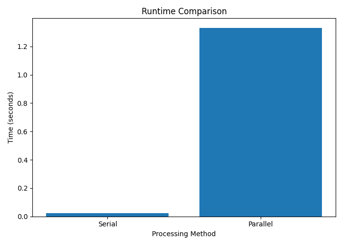

Output Sinyal Tekanan
Grafik berikut menampilkan contoh sinyal tekanan cuff sintetis yang digunakan sebagai data input dalam simulasi.

Mini Project Evaluasi 3 Komputasi Paralel
Project ini merupakan simulasi pemrosesan sinyal tekanan cuff menggunakan Python. Program membuat data tekanan sintetis yang terinspirasi dari sistem pengukuran tekanan darah, lalu data tersebut diproses menggunakan metode serial dan metode paralel.
Tujuan project ini adalah menunjukkan penerapan konsep komputasi paralel pada proses pengolahan data sinyal.
Dalam sistem pengukuran tekanan darah, data tekanan dari cuff dapat diproses untuk menganalisis pola sinyal. Jika jumlah data yang diproses cukup besar, komputasi paralel dapat digunakan untuk membagi beban kerja menjadi beberapa bagian kecil agar proses pengolahan data dapat dilakukan secara bersamaan.
Project ini terinspirasi dari konsep CuffnCode, tetapi hanya berfokus pada bagian logic code dan simulasi pemrosesan data.
Pada metode paralel, data dibagi menjadi beberapa bagian berdasarkan jumlah
core CPU yang tersedia. Setiap bagian data diproses oleh proses yang berbeda
menggunakan library multiprocessing pada Python.
Setelah semua bagian data selesai diproses, hasil dari setiap proses digabungkan menjadi satu hasil akhir. Hasil waktu eksekusi metode serial dan paralel kemudian dibandingkan untuk melihat perbedaan performanya.
Program dibuat menggunakan Python dengan beberapa library pendukung.
NumPy digunakan untuk pengolahan data numerik,
Matplotlib digunakan untuk membuat grafik,
dan multiprocessing digunakan untuk menjalankan proses komputasi paralel.
Grafik berikut menampilkan contoh sinyal tekanan cuff sintetis yang digunakan sebagai data input dalam simulasi.
Grafik berikut menunjukkan perbandingan waktu eksekusi antara metode serial dan metode paralel.

Hasil pengujian menunjukkan bahwa data sinyal dapat dibagi menjadi beberapa bagian kecil untuk diproses secara paralel. Perbandingan waktu eksekusi digunakan untuk melihat pengaruh pembagian beban kerja terhadap proses pemrosesan data.
Project ini menunjukkan bahwa konsep komputasi paralel dapat diterapkan pada pemrosesan data sinyal. Dengan membagi data menjadi beberapa bagian, proses komputasi dapat dilakukan secara bersamaan menggunakan beberapa core CPU.
Nama: Pratama Idola Tua
NRP: 152024116
Mata Kuliah: IFB-206 Komputasi Paralel